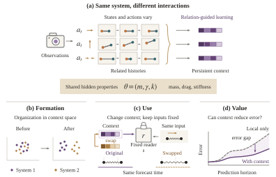

Bring related contexts together.
Encourage agreement between the contexts of related interactions, while preserving variation across systems.
Context AContext B
World models · Persistent representations
World models should learn what stays the same as interactions change. SPRII learns reusable context from related experiences, without numerical physical-property labels.

01 / The idea
Two trajectories can look different while sharing the same mass, drag, or stiffness. SPRII uses these relations to shape persistent context through two complementary objectives, while retaining the learner’s native training objective.
Encourage agreement between the contexts of related interactions, while preserving variation across systems.
Combine a related donor’s context with the recipient’s current input to predict the recipient’s future.
The relation tells us which interactions share properties; it does not provide their numerical values. Align and Cross can be studied separately.
SPRII gives history-derived context a route into prediction while keeping the recipient’s current inputs and the learner’s native objective. The route can use a dedicated history encoder or an existing context state.
Structure is the interface control. It provides a persistent-context route without relation objectives, so its comparison with Align or Cross tests what relation supervision adds.
In the controlled JEPA implementation, a causal Transformer encodes observation and action histories. The predictor combines this persistent context with current observation features, future actions, and the prediction horizon. SpringWorld uses Align + Cross; CoPhy JEPA uses Cross.
The CoPhy RSSM retains its deterministic and stochastic state, reconstruction, prior prediction, and KL regularization. SPRII adds a persistent-context route trained with Cross; its recurrent state remains available.
CoPhy CPC keeps its contrastive future-discrimination objective and native dynamics state. Cross trains its prediction route to use context from a related interaction.
Align and Cross complement the native loss. The enabled operations depend on the learner; SPRII does not impose one shared network architecture. Read the method.
02 / Three questions, separate evidence
Persistent information can be learned without being used, and used without improving prediction.
Probe persistent physical properties in frozen representations. The relation shapes which information becomes accessible.
Swap donor context while holding the reader, current input, and future actions fixed. Test whether forecasts respond to the donor’s physical properties.
Compare task error with matched controls. Measure benefits across prediction horizons and readout choices.
A closer look / PokeWorld
Change the pairing rule from shared mass to shared mass and drag. Drag becomes easier to read out, while mass becomes harder—even though mass is still shared.
Relation design selects what the representation emphasizes.
Reported frozen-code probes on validation systems. The control switches between two measured conditions.
Shared mass: mass 0.5271, drag 0.3075.
Shared mass + drag: mass 0.0709, drag 0.9249.
Use / SpringWorld
Hold the source, fitted task reader, recipient initial state, and future actions fixed. Vary donor mass and target mass independently: forecasts have lower error when the two match.
95% paired-system interval: [0.1320, 0.2343]
Mean mismatched-minus-matched error across 64 development systems, three frozen Align + Cross sources, and one fixed reader per source. Positive values favor matching.
Each system contributes a complete 5 × 5 donor–target grid. The difference averages 20 off-diagonal and five diagonal cells; systems and sources receive equal weight. The interval conditions on the fitted models. This is a task-reader intervention, separate from the source embedding predictor.
Value / SpringWorld
With source features and a recipient-only base frozen, a context-conditioned residual reader reduces development MSE by 7.9% compared with a query-only residual reader. All nine source–reader pairs improve.
Query-only MSE: 0.6185 · Context-conditioned MSE: 0.5695
SpringWorld Align + Cross · three sources × three readers · common targets and fitting schedules. Reader fitting changes; source features stay frozen.
The two routes share their architecture but not exactly their active capacity. The same reader design does not improve the tested PokeWorld families. This comparison measures readout adaptation, not a context swap through one fixed reader.
A separate control fits matched-context and mismatched-context M₂ readers with identical architecture. Matched context lowers full-development error by 8.7%, with the same ordering in all nine pairs.
Mean ± SD · lower error is better
| Setting / learner | Baseline | SPRII | Error reduction |
|---|---|---|---|
| SpringWorld / JEPA | 0.138 ± 0.002 Native JEPA | 0.107 ± 0.004 Align + Cross | 22.3% |
| CoPhy Collision / CPC | 0.223 ± 0.006 Structure | 0.189 ± 0.007 Cross | 15.4% |
| CoPhy Collision / RSSM | 0.228 ± 0.005 Structure | 0.202 ± 0.007 Cross | 11.4% |
| CoPhy Collision / JEPA | 0.215 ± 0.007 Structure | 0.184 ± 0.005 Cross | 14.2% |
| CoPhy Balls4 / RSSM | 1.280 ± 0.031 Structure | 1.154 ± 0.025 Cross | 9.9% |
The 14.6% headline is the equal-weight mean over these five comparisons, calculated before rounding. SpringWorld uses standardized state-increment MSE; CoPhy uses physical trajectory MSE. Compare error magnitudes within each row.
SpringWorld evaluates 256 sealed systems using three source models and three readers per source. Its 22.3% reduction has a paired 95% confidence interval of 13.2–30.7%. CoPhy Collision uses 1,994 held-out episodes, and Balls4 uses 1,000 recipients; CoPhy results use three joint source/reader seeds, with budgets matched within each learner family.
Use experiments in SpringWorld intervene on a fixed task reader fitted to frozen representations. They do not directly test the original source predictor. The best interface also depends on the task: direct context lowers D-Clean h32 error by 22.8% relative to decoded physical parameters, but has 2.1% higher error in SpringWorld.
Project results summarize the October 2026 author manuscript linked above. The code guide identifies the available implementations and reproduction inputs.
03 / See the interactions
Start with two controlled worlds. Different actions and histories reveal the physical properties that remain the same.
Push a spring–mass system in different ways. Its motion changes, but the parameters governing that motion remain fixed.
Separate donor and recipient encounters expose shared properties through different motions. The pairing rule determines which properties are shared.
13 settings · one consistent guide
Open a setting to see what persists, what changes, the parameters and protocol, and the evidence it contributes. Each entry connects to the paper and its implementation.
Cold-start prediction in a visual elastic system.
SPRII Align + Cross versus Native JEPA and TDS; Structure, Align and Cross isolate the components.
The sealed comparison uses the same data bank, source/readout budgets and 256 held-out systems. Use tests freeze the representation model and fitted task reader while changing donor context.
Prediction MSE falls from 0.138 to 0.107 versus Native JEPA: a 22.3% reduction on 256 sealed systems (95% CI 13.2–30.7%).
Across cold-start horizons, Persistent-over-Null gains rise from 2.0% at h1 to 35.7% at h16 in the separate fixed 178-system grid.
The Use intervention acts on a task reader fitted to frozen representations; it is separate from the source embedding predictor.
Test how relation reliability and shared factors shape persistent representations.
Structure, Align, Cross and Align + Cross; correct, randomized and partial-factor relations.
Relation interventions retain the source architecture, observation budget and donor/query marginals within each comparison.
Raising correct-pair fraction from 0 to 1 increases the between/within-system context-distance ratio from 0.260 to 4.39.
Changing shared mass to shared mass + drag lowers mass-probe R² from 0.527 to 0.071 while drag-probe R² rises from 0.308 to 0.925.
The acquisition, factorized-relation and R8 fidelity banks are separate protocols; their sample counts should remain separate.
Separate accessible physical information from its value for prediction.
Common-reader comparisons with TDS, NOD, FCRL, CaDM and DALI; Null, Persistent, Decode and Oracle readouts test the information interface.
Readout comparisons use frozen source features, common prediction targets and matched permitted inputs. Persistent and Decode use the same donor context.
With a common reader design, SPRII has the lowest mean error at all four horizons, including 33.7% lower h32 error than CaDM.
Direct context lowers h32 error by 22.8% relative to decoded physical parameters, despite an independently validated decoder R² above 0.996.
These endpoints measure prediction through a common fitted reader; source-training budgets and method adaptations are specified separately in the paper.
Predict contact-dependent object motion from related support interactions.
SPRII Cross versus Native, Structure and Random across CPC, RSSM and JEPA.
Each learner comparison shares queries, targets, donor eligibility and training budgets across arms; the main result uses 1,994 held-out episodes and three joint source/reader seeds.
Relative to Structure, prediction error falls by 15.4% for CPC, 11.4% for RSSM and 14.2% for JEPA.
The corresponding SPRII trajectory MSEs are 0.189, 0.202 and 0.184.
The multi-support prediction protocol differs from the original CoPhy task’s input and target intervals.
Predict rebounds and test which physical factors influence reader memory.
Native, Structure and Random where tested; Cross for JEPA/CPC/RSSM and Align + Cross for CoPhyNet.
The held-out RSSM comparison uses the same 1,000 Balls4 recipients. Factor-specific donor tests keep source/reader weights and recipient inputs fixed.
On held-out Balls4 recipients, RSSM MSE falls from 1.280 to 1.154 versus Structure, a 9.9% reduction.
Restitution dominates the reported reader-memory probes and fixed-predictor donor effects; mass and friction are substantially weaker.
Balls4 is a task configuration within Balls. Development reader-memory assays and the held-out endpoint use different stated populations.
Extend multi-support prediction to multibody stability and falling towers.
JEPA, CPC, RSSM and CoPhyNet across available Native, Structure and Random controls.
Perception, query/target construction and pose-head route are held fixed within the scene.
Blocktower is one of three scenes in the 45-cell CoPhy development matrix spanning four learner families.
The additional JEPA sources retain an adverse contrast: Cross has higher prediction error than Random at both reported sources.
These are development comparisons, including reader-selection examples; gains depend on learner and comparator.
Learn reusable context for one-dimensional field evolution.
Released NOD, Random and prediction-only continued NOD; related operator adaptations are reported separately.
Continuation controls match additional update budgets, with the same prediction task and distribution-specific evaluations.
SPRII lowers mean error relative to released NOD on all three Burgers distributions.
Against matched prediction-only continuation, the ID gain is 4.1%, while OOD performance is near-tied.
The released-default and continued-NOD comparisons answer different questions; the illustrated ν value is not the dataset range.
Test how multiple independent histories help predict reaction–diffusion fields.
NOD-Hier versus the SPRII alignment/continuation recipe on a regenerated Python simulation bank.
Each recipe is held fixed as history count changes; the reporting initial conditions and three source seeds are shared.
Increasing history count from one to four reduces SPRII H50 error by 16.9%, 18.0% and 10.9% on ID, OOD-Intra and OOD-Extra.
The gap to NOD narrows on every split, although NOD retains slightly lower absolute mean error at four histories.
The recipes use different source-training budgets: 45,000 updates for NOD and 50,000 for SPRII. This comparison does not isolate alignment at equal compute.
Use real tactile grasps to test relation-dependent factor selectivity.
Same-hardness, same-shape and randomized relations, with Align + Cross.
Each batch balances configurations and donor/query marginals; confirmation holds out grasps from the same six known configurations.
Hardness accuracy is 1.000 under same-hardness relations versus 0.333 under same-shape relations.
Shape balanced accuracy reverses the ordering: 1.000 under same-shape relations versus 0.500 under same-hardness relations.
The evidence concerns held-out grasps from known object configurations. Available recordings do not include pre-contact frames or action sequences.
Forecast forces and robot motion from repeated task context.
Cross and Align + Cross versus Structure, donor-pairing and input controls.
Within donor interventions, the query, target, horizon, actions and fitted predictor stay fixed while context changes.
Under matched donors, Cross lowers error on all five reported force/torque and TCP endpoints relative to Structure.
Same-task independent episodes provide the persistent context; known physical-parameter equivalence is not assumed.
These are offline forecasting and donor-use results from recorded manipulation, not a newly executed closed-loop robot controller.
Test recipient-specific persistent updates through fixed prediction weights.
Own-system versus wrong-system updates within each of three frozen JEPA/GRU predictors.
Architecture, predictor weights and training-only normalization remain fixed within each comparison.
Own-system updates reduce error for all three frozen predictors on 512 prospective systems.
For Persistent-JEPA, wrong-minus-own MSE is 5.329 × 10⁻⁵ (paired 95% CI 3.930–6.724 × 10⁻⁵).
This is a fixed-update intervention study, without new Align/Cross source training.
Learn persistent information about a recurring cooperative partner.
Align-only history conditioning versus a matched history slot with variance/covariance regularization.
Matched conditions share architecture, initialization and training setup; prior episodes identify the partner without exposing policy weights.
Same-partner alignment lowers mean partner-behavior probe error at every history budget.
At full history, familiar-partner return improves in all three training seeds.
The study uses one layout; familiar-partner return and the held-out development cohort are reported separately.
Evaluate history-conditioned dynamics in online pendulum control.
One ID-selected SPRII recipe versus CaDM and Random relation, evaluated across all groups.
The same ID-selected recipe and success criterion apply to every OOD group; there is no per-group recipe selection.
SPRII has higher mean return than CaDM in four of five groups, with lower return in OOD c2.
Matched and wrong-context tests use the same checkpoint; the paper reports return, success and physical probes together.
Weak mass probes do not establish recovery of every physical parameter. Logged-action donor interventions are distinct from online controller interventions.
04 / Build on this work
The official public repository includes source code, environment adapters, experiment recipes, and a small CPU example to check the installation.
The release guide distinguishes a quick installation check from full paper reproduction, and documents data requirements and coverage.
@misc{dai2026sprii,
title = {Shaping Persistent Representations from Independent Interactions},
author = {Dai, Ji and Fang, Quan and Gao, Junyu and Guo, Rongfeng
and Rong, Haoyan and Huang, Yiping and Li, Yongxi},
note = {Author manuscript, October 2026},
year = {2026},
url = {https://jidaivita.github.io/sprii/SPRII.pdf}
}Figure and controlled-world demonstrations by the SPRII authors. The SpringWorld demonstration uses MuJoCo. Media illustrate their stated conditions and are not supplied as evaluation outputs. See the repository for code licenses and third-party notices. Contact: Ji Dai.